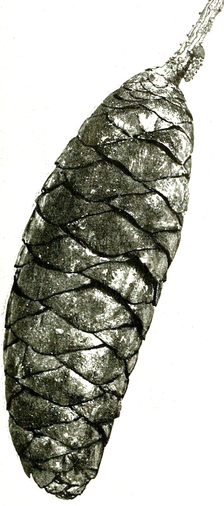

乔木 · 植物界
大果青扦 Picea neoveitchii

松科云杉属常绿乔木，中国特有珍稀树种，球果粗大、叶四棱形，散生于秦巴山地，被列为国家二级保护植物。
- 分类
- 门裸子植物门纲松柏纲目松柏目科松科属云杉属
- 栖息环境
- 海拔 1000–2000 米的秦巴山地山坡与沟谷，喜温凉湿润、排水良好
- 地理分布
- 中国陕西南部、甘肃南部、河南西部与湖北西北部，为中国特有种
- 保护级别
- 中国国家二级保护野生植物；野生种群稀少，天然更新困难
物种志
大果青扦为常绿乔木，高可达 15 米，树皮灰褐色并呈鳞片状开裂，小枝淡黄色或淡褐色，无毛。叶片四棱状钻形，长 1.5–2.5 厘米，先端尖，四面均有气孔线，螺旋状排列。雌雄同株，球果圆柱形或卵状圆柱形，长 8–15 厘米，成熟前绿色，成熟时淡褐色，种鳞宽大，种子具翅。
本种为中国特有种，仅零星分布于陕西南部、甘肃南部、河南西部与湖北西北部的秦巴山地，生于海拔 1000–2000 米的山坡与沟谷，喜温凉湿润气候、排水良好的山地棕壤，耐寒而不耐干旱瘠薄。它生长缓慢，天然更新困难，加之分布区狭窄、人为采伐与生境破坏，野生种群数量稀少，被列为国家二级保护野生植物。木材可供建筑与家具，树形优美，也可作高海拔地区的园林树种。
形态与习性
- 株高可达 15 米，树冠塔形
- 花期4–5 月，雄球花黄色
- 球果成熟9–10 月，球果长 8–15 厘米
- 光照喜光，幼树稍耐阴
- 水分喜湿润，不耐干旱瘠薄
- 土壤排水良好的山地棕壤
- 保护级别国家二级保护野生植物
趣味知识
- 大果青扦的球果在云杉属中属于较大的一类，长可达 15 厘米。
- 它是中国特有种，野生植株仅见于秦巴山地的狭小区域。
- 云杉属植物多用种子繁殖，幼苗生长缓慢，需遮阴保湿。
- 它的四棱形针叶四面都有气孔线，是识别云杉属的重要特征。